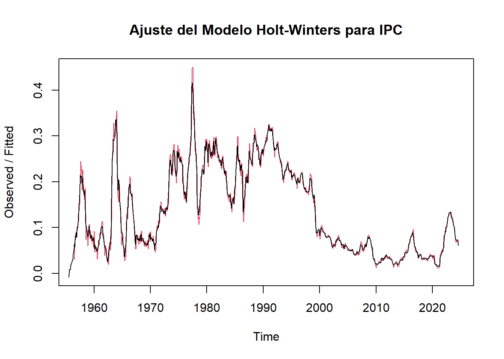
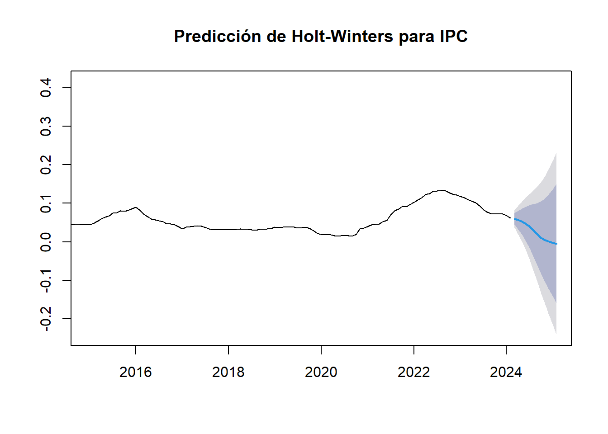

Capítulo 5 Modelo Holt-Winters y suavizamiento exponencial
5.1 Holt Winters
# Aplicar el método de Holt-Winters con estacionalidad aditiva
modelo_hw <- HoltWinters(Indice_ts, seasonal = "additive")
# Hacer una predicción a futuro (por ejemplo, para los próximos 12 meses)
prediccion_hw <- forecast::forecast(modelo_hw, h = 12)# Visualizar la predicción
plot(prediccion_hw, main = "Predicción de Holt-Winters para IPC",xlim = c(2015,2025))
## Point Forecast Lo 80 Hi 80 Lo 95 Hi 95
## Mar 2024 0.0596272209 0.044718323 0.07453612 3.682603e-02 0.08242841
## Apr 2024 0.0565752463 0.032308344 0.08084215 1.946222e-02 0.09368827
## May 2024 0.0523199834 0.018120176 0.08651979 1.589216e-05 0.10462407
## Jun 2024 0.0465042847 0.001631737 0.09137683 -2.212236e-02 0.11513092
## Jul 2024 0.0387576362 -0.017542243 0.09505752 -4.734560e-02 0.12486087
## Aug 2024 0.0289763373 -0.039485745 0.09743842 -7.572738e-02 0.13368006
## Sep 2024 0.0189350281 -0.062395928 0.10026598 -1.054499e-01 0.14331999
## Oct 2024 0.0105207440 -0.084356633 0.10539812 -1.345817e-01 0.15562317
## Nov 2024 0.0044176226 -0.104656074 0.11349132 -1.623962e-01 0.17123145
## Dec 2024 0.0001412276 -0.123753186 0.12403564 -1.893389e-01 0.18962138
## Jan 2025 -0.0028946175 -0.142210867 0.13642163 -2.159604e-01 0.21017120
## Feb 2025 -0.0048360912 -0.160154101 0.15048192 -2.423745e-01 0.23270231